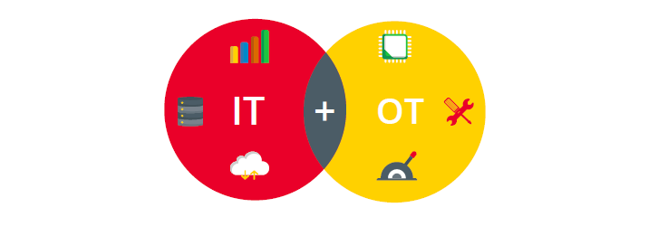
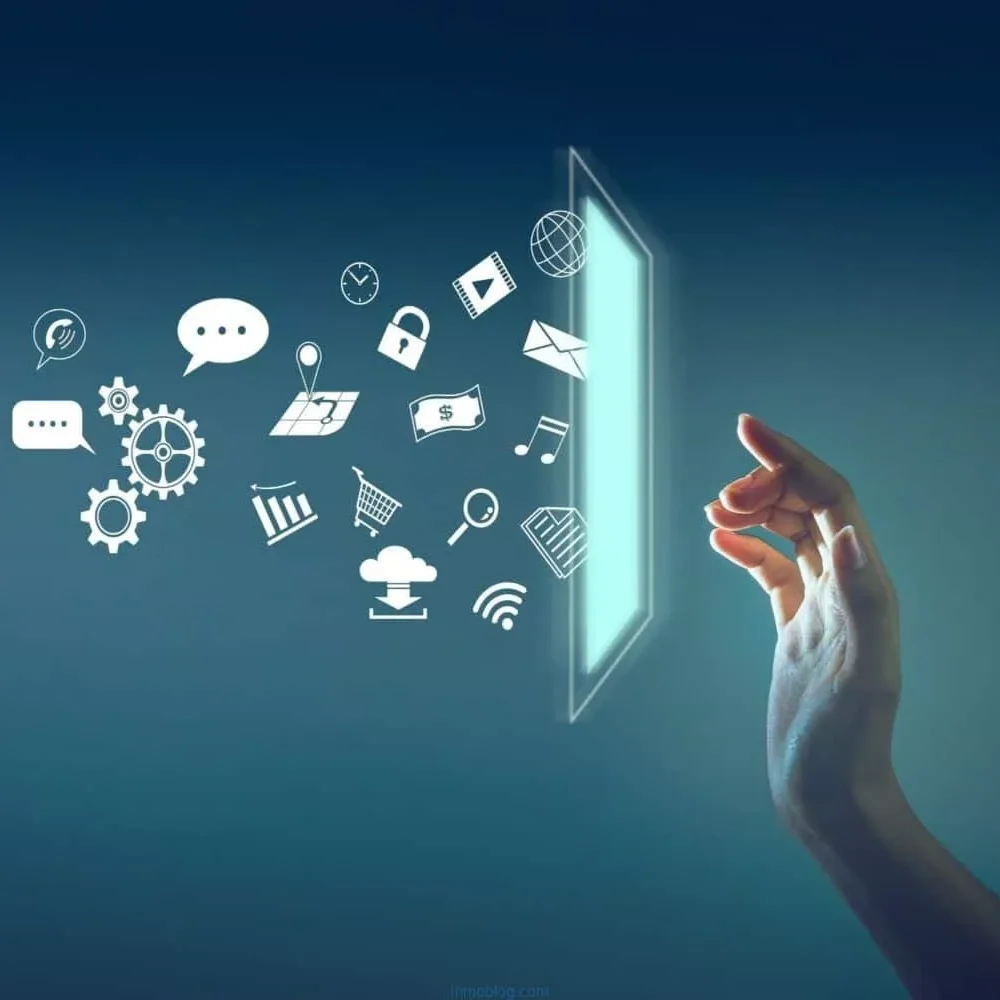
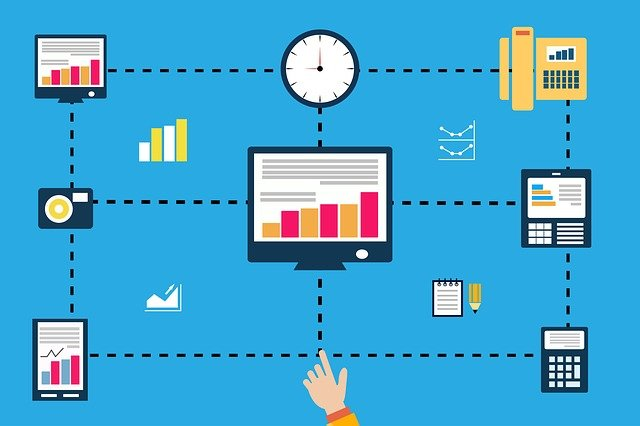

Transformación Digital Industrial
Conectando It y OT para la industria del futuro
¿Qué es la digitalización?
La digitalización industrial es la integración de tecnologías digitales en los procesos productivos, buscando mejorar la eficiencia, la trazabilidad y la toma de decisiones. Permite que las fábricas y empresas conecten sus datos y procesos para reaccionar de manera ágil ante cambios del mercado y demandas del cliente.

IT vs OT: Los dos pilares
IT (Tecnologías de Información)
Se centra en la gestión de datos, software, redes y sistemas informáticos que permiten optimizar la toma de decisiones en la empresa. IT ayuda a planificar, analizar y proteger la información corporativa.
OT (Tecnologías Operativas)
Incluye la maquinaria, sensores, sistemas de control industrial y procesos de producción. OT se centra en la operación y el rendimiento de la planta, asegurando que los sistemas físicos funcionen correctamente y de manera segura.
Tecnologías clave
- Internet Industrial de las Cosas (IIoT): Conecta sensores y máquinas para recolectar datos en tiempo real.
- Inteligencia Artificial: Permite análisis predictivos, optimización de procesos y mantenimiento preventivo.
- Big Data y Analítica: Gestiona grandes volúmenes de datos para generar insights y mejorar decisiones.
- Automatización y Robótica: Incrementa la productividad y reduce errores humanos en la producción.
- Cloud Computing: Facilita el almacenamiento seguro de datos y su acceso desde cualquier lugar.
- Realidad Aumentada y Virtual: Mejora la formación del personal y la supervisión de procesos.
Ventajas de la digitalización end-to-end
- Mayor eficiencia operativa al reducir tiempos y costos.
- Reducción de errores gracias a la monitorización y control automatizado.
- Optimización de recursos mediante planificación basada en datos.
- Toma de decisiones basada en información real y analítica avanzada.
- Mejora de la flexibilidad y capacidad de innovación de la empresa.
Impacto en la organización
La digitalización transforma todos los niveles de la organización: desde la producción hasta la gestión de recursos humanos y la atención al cliente. Las empresas se vuelven más ágiles, los equipos colaboran mejor y los procesos se vuelven más transparentes y eficientes. Además, facilita la sostenibilidad y la adaptación rápida a cambios del mercado.
Al integrar IT y OT, las compañías pueden detectar fallos antes de que ocurran, personalizar la producción y ofrecer productos y servicios más innovadores, generando una ventaja competitiva en la industria del futuro.